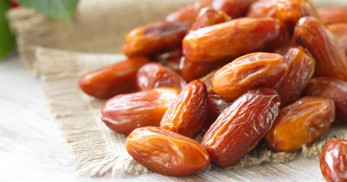

L'Algérie est classé parmis les principaux pays producteurs de dattes (4 éme rang mondial avec 14% de la production mondiale) et le montant des exportations en 2016 a été de 37 millions de dollars ce qui est qualifié d'insignifiant par rapport au potentiel existant, a précisé Mme Bahloul lors d'une conference de presse de presentation consacrée au 3éme du salon international de la datte de Biskra prévu du 2 au 5 décembre prochain
-ww.aps.dz- 